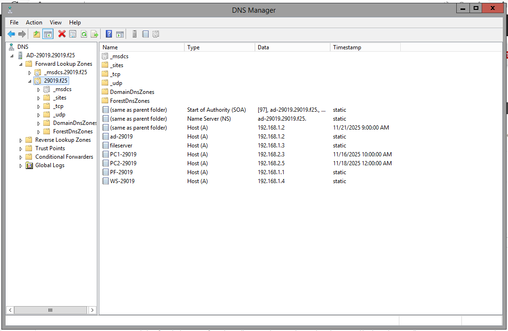
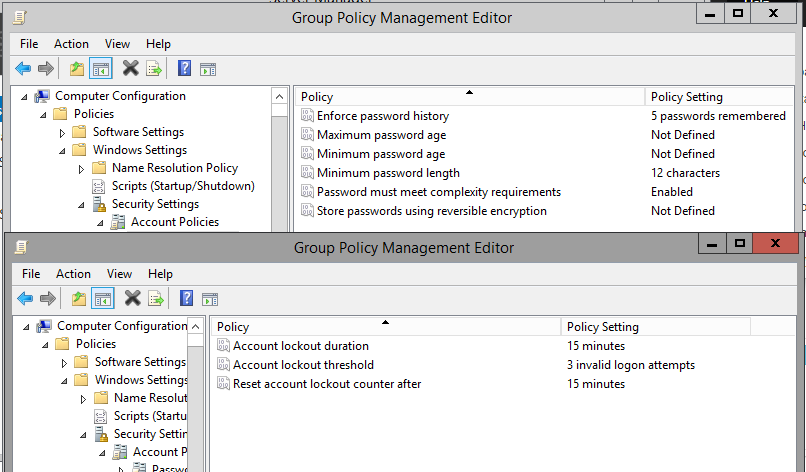
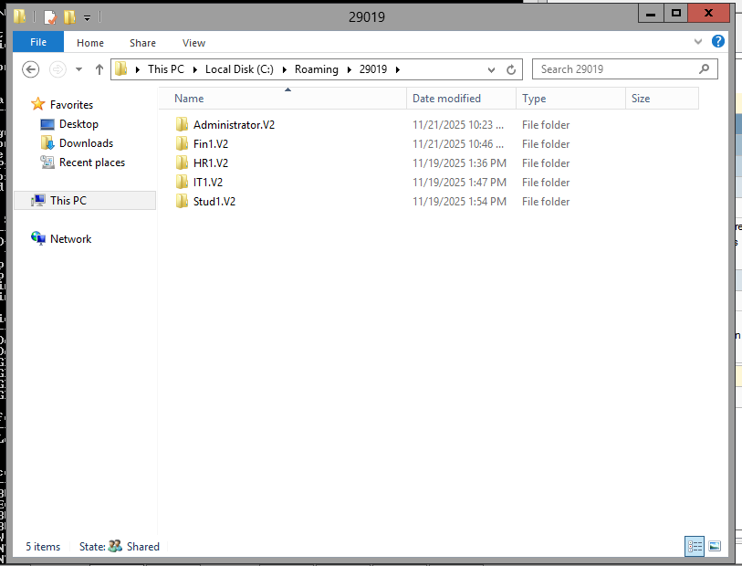
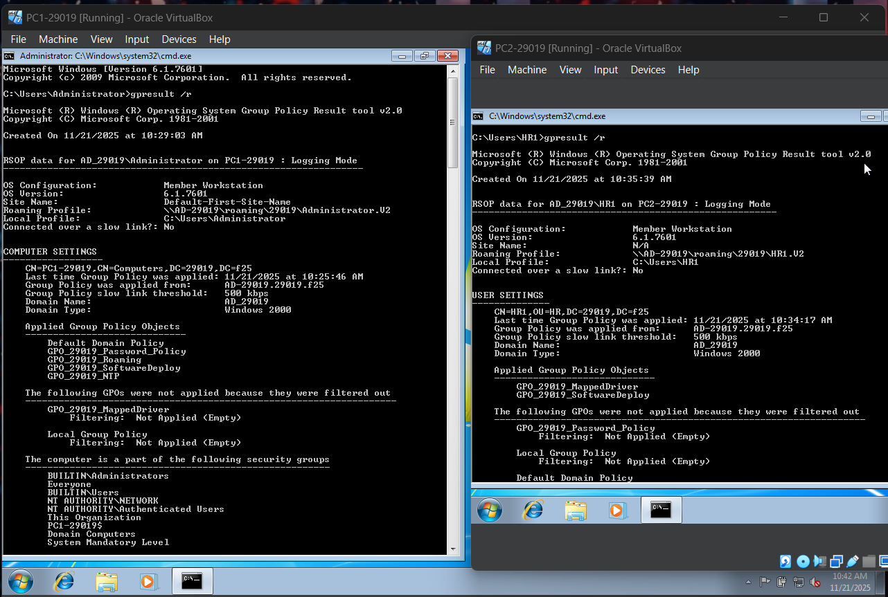
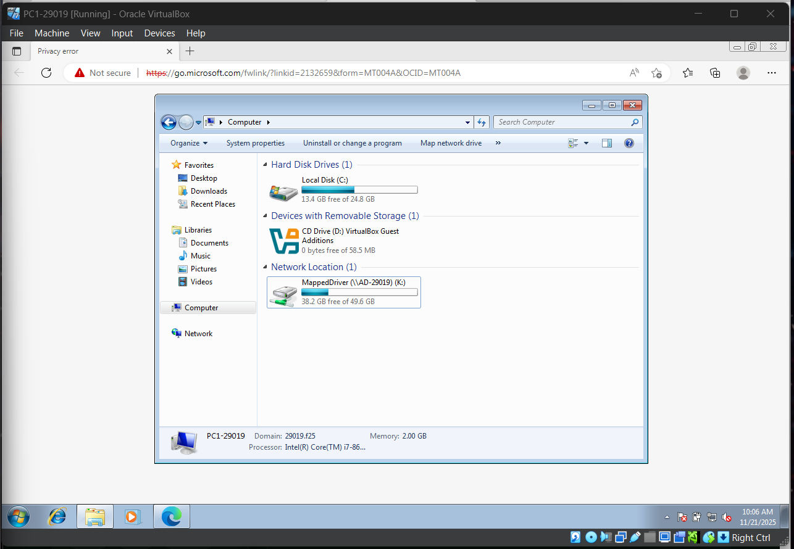

Navigation
Windows Server (Active Directory, GPO, IIS)
This section provides evidence for Task 2, covering the Domain Controller installation, DNS configuration, Group Policy implementation, and the IIS web portfolio site.
1. Active Directory and DNS Setup
Organizational Units (OUs) and Users
The Active Directory Users and Computers (ADUC) console view confirms the creation of required OUs (IT, HR, Students, Finance) and their respective user accounts within them, following the naming convention. As well the computers, which joined the "29019.f25" domain.

DNS Records Verification
The Domain Name System (DNS) server configuration confirms the forward lookup zone for the "29019.f25" domain and the necessary host records for the DC and other services. As well showcasing their ip address, either dynamically or statically.
2. Group Policy Objects (GPO) Implementation
GPO Management List
The Group Policy Management console displays all custom GPOs created to enforce central policies across the domain. These include:
- GPO_29019_Password_Policy
- GPO_29019_Roaming
- GPO_29019_MappedDrives
- GPO_29019_SoftwareDeploy
- GPO_29019_NTP

Password Policy Enforcement
The password policy settings are configured to meet strict security requirements (minimum 12 characters, history of 5, and account lockout after 3 failed attempts). Also enforcing password complexity, password history, and minimum password length.
Roaming Profiles Path
This screenshot shows the File Explorer on the Domain Controller (AD-29019), specifically withn the specified path C:\roaming\29019. It displays a user profile folder named "Fin1.V2", "HR1.V2", "IT1.V2", and "Stud1.V2", which was automatically generated and synchronized when the user logs onto the machine. Thus verifying the roaming profile (GPO) is successfully.
Client Verification (gpresult)
This screenshot captures the output of the "gpresult /r" command, which was executed on the client machine (PC1-29019) with Administrator privileges. Running the command this way forces the system to display both the User Settings and the Computer Settings. This is critical evidence that proves all GPOs are successfully linked and applied to both the user (for Mapped Drives, Roaming Profiles, and Software) and the computer (for Password Policy and NTP settings).
Client Verification (Mapped Drive)
A screenshot from the client PC (PC1) verifying that the GPO successfully mapped the centralized shared drive to this Computer.
3. IIS Web Portfolio Site
Portfolio Site Display
The personal portfolio site, hosted on the Windows Server's IIS role, is displayed. This serves as a public-facing service and confirms successful web server setup and network accessibility.